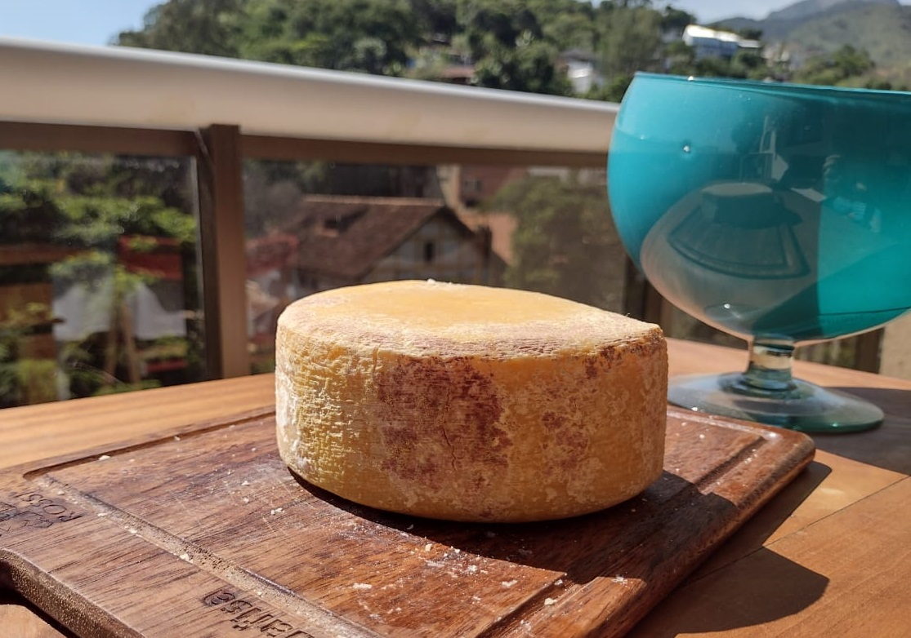

Produtos
Queijos
Queijo não é tudo igual! Existem diversas regiões produtoras pelo Brasil, cada qual apresentando seus queijos com seus únicos sabores.
Explore a tabela abaixo e descubra o seu tipo de queijo ideal.
| Tipo de Queijo | Características | Produtor | Nome Queijo | Valor | |||||||||||
| Fresco | Queijos de sabor mais suave, branquinhos, por não passarem pelo processo de maturação. | Bom Sucesso | Bom Sucesso | Bom Sucesso | Bom Sucesso | Mantiqueira de Minas | Temperado | Azeitado no Manjericão | Defumado | 34,90 | 34,90 | 39,90 | 35,90 | ||
| Meia Cura | Sabor de intensidade média, possui um tempo de maturação de até 20 dias. | Bom Sucesso | Roça da Cidade | - | Meia Cura | Legítimo Queijo Canastra | - | 34,90 | 59,90 | - | |||||
| Curado | Queijo mais seco e firme, de
casca amarelada e sabor levemente ácido. Sabor mais intenso e conservação melhorada. |
Almeida Guimarães | Almeida Guimarães | Bom Sucesso | Capa Preta | Rosso | Bom Sucesso | 65,90 | 51,90 | 24,90 | |||||
| Especiais | Mix de 4 tipos de queijo | Bom Sucesso | Mix Mantiqueira | 42,90 |
Frescos
Mantiqueira de Minas

Queijo do dia-a-dia, suave,
delicado e saboroso. Harmoniza
com geleias, doce de leite,
goiabadas e com aquele cafezinho
passado na hora. Compõe saladas e
sanduíches.
Peso aproximado de 500g.
R$ 34,90
Temperado

Queijo Mantiqueira de Minas
temperado com especiarias, ervas finas,
pimenta e um toque especial de alho
frito. Ideal para petisco, acompanhado
de um bom vinho branco ou com um
tinto Pinot Noir. Uma cerveja Pilsen
também é uma excelente escolha.
Peso aproximado de 500g.
R$ 34,90
Azeitado no Manjericão

Queijo aromático envolto
em azeite e manjericão.
Uma experiência sensorial
deliciosa para seu olfato e
paladar.
Peso aproximado de 500g.
R$ 39,90
Defumado

Sabor amadeirado, com defumado
marcante e delicioso. Pode ser
degustado em diferentes ocasiões.
Harmonização: cervejas e vinhos.
Peso aproximado de 500g.
R$ 35,90
Meia Cura
Meia Cura

Leve, macio e suave. Perfeito
para um lanche ou acompanhar
um cafezinho. Pode também ser
apreciado com vinho, cachaça e
cerveja.
Peso aproximado de 500g.
R$ 34,90
Legítimo Queijo Canastra

Perfeito para uso na gastronomia e
harmonizações com cervejas, vinhos,
cachaças e café, e também pães,
massas, doces e aperitivos. É o
melhor queijo para fazer o pão de
queijo. Ralado, em fatias, lascas,
derretido ou gratinado, a escolha é
certeira.
Peças de aproximadamente 550 a 600g.
R$ 59,90
Curado
Capa Preta

Medalha de prata 2019 V prêmio Queijo Brasil,
Medalha de prata 2021 Expo Queijo, Medalha de Prata Concurso Mundial do
Quejio do Brasil 2022.
Carro chefe da família. Sabor forte,
ligeiramente picante, superfície
firme e espessa, devido ao processo
de maturação.
Pintado com polímero preto orgânico
comestível, à base de algas. Queijo
típico do Uruguai, recebendo lá o
nome de Parmentino. Combina com
um belo vinho ou cerveja. Maturado por 300 dias.
Peso aproximado de 500g.
R$ 65,90
Rosso

Medalha de Prata Concurso Prêmio CNA Brasil Artesanal, adições
Aromatizantes/condimentos, 2022; Medalha de Prata Concurso Mundial do Queijo do
Brasil, 2022.
Queijo de consistência firme e
uniforme, com sabor levemente
picante. Excelente para petisco, em
tábuas com geleias de pimenta agridoce
defumada e geleias vermelhas.
Pintado por corante natural derivado
do carmim de cochonilha, o que o deixa
mais atrativo. Pode ser degustado puro
ou acompanhado de vinho ou cerveja.
Maturado por 90 dias.
Peso aproximado de 500g.
R$ 51,90
Bom Sucesso

Queijo de massa cozida, semi-dura,
curado por 90 dias em caverna
climatizada. Com casca florida, tem
sabor levemente picante e adocicado.
Harmoniza com cervejas, vinhos e
massas.
Peças de 200 a 250g.
R$ 24,90
Especiais
Mix Mantiqueira

Mix composto por 4 tipos de queijo: Mantiqueira de Minas, temperado, defumado e capa preta. Perfeito para uma bela tábua de frios. Acompanha bem cervejas, vinhos e até uma boa cachaça.
Geleias
Geleias da Cris

Produzidas em Viçosa, de forma artesanal, pela Cris, nutricionista, com frutas orgânicas, pouco açúcar demerara orgânico e muito carinho. Leves e deliciosas para acompanhar torradas, pães, queijos, iogurte natural, pão de queijo, bolos e também usadas no preparo de drinks.
Morango com Cabernet Sauvignon Light

Ingredientes orgânicos.
Pote de 180g.
R$ 25,00
Mexerica Light

Ingredientes orgânicos.
Pote de 180g.
R$ 25,00
Frutas Vermelhas com Hibisco Light

Ingredientes orgânicos.
Pote de 180g.
R$ 25,00
Frutas Amarelas Light

Ingredientes orgânicos.
Pote de 180g.
R$ 25,00
Amora com Goiaba Light

Ingredientes orgânicos.
Pote de 180g.
R$ 25,00
Outros Produtos
Manteiga Artesanal
Direto da fazenda para a sua mesa, sem conservantes e sem corantes.
Embalagem de 200g.
R$ 9,90
Requeijão Cremoso

Direto da fazenda para a sua mesa, sem conservantes e sem corantes.
Embalagem de 200g.
R$ 12,50
Requeijão de Corte

Direto da fazenda para a sua mesa, sem conservantes e sem corantes.
Embalagem de 200g.
R$ 13,70